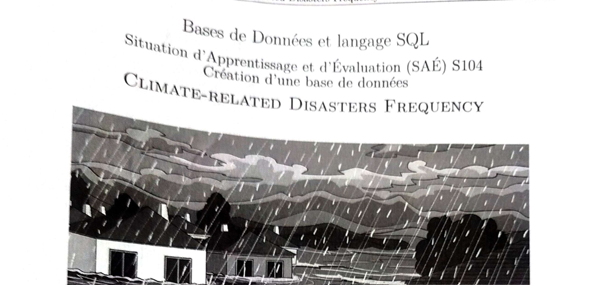

Bases de données — Climate-Related Disasters Frequency
Modélisation complète d'une base PostgreSQL sur les catastrophes climatiques

Informations clés
Le projet en bref
La SAÉ qui m'a le plus marqué en BUT1. À partir d'un jeu de données réel sur les catastrophes climatiques par pays, j'ai dû mener tout le cycle de conception d'une base de données relationnelle.
Concrètement : analyse des données brutes → modèle conceptuel (MCD) → modèle logique (MLD) → modèle physique → script SQL de création → import des données → écriture de requêtes d'analyse complexes (jointures, agrégations, sous-requêtes).
Comment ça s'est déroulé
Analyse du jeu de données
Compréhension du fichier source, identification des entités (Pays, Région, Type de catastrophe, etc.).
Modélisation MCD
Premier schéma à la main, puis dans MySQL Workbench. Beaucoup d'allers-retours.
MLD et création des tables
Passage au modèle logique, écriture manuelle du script SQL (clés primaires, étrangères, contraintes).
Requêtes d'analyse
Plusieurs requêtes : catastrophes par région, évolution temporelle, classement par fréquence…
Rendu
Mise en forme du rapport, illustrations des schémas, copies d'écran des résultats.